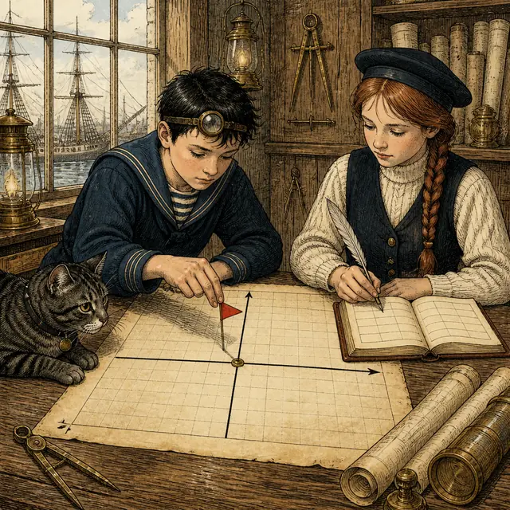
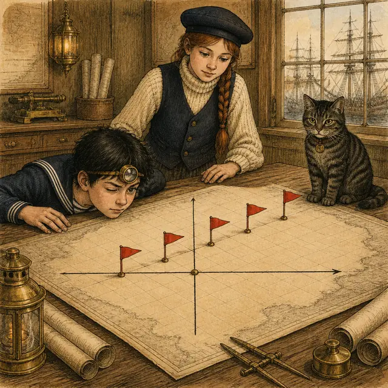
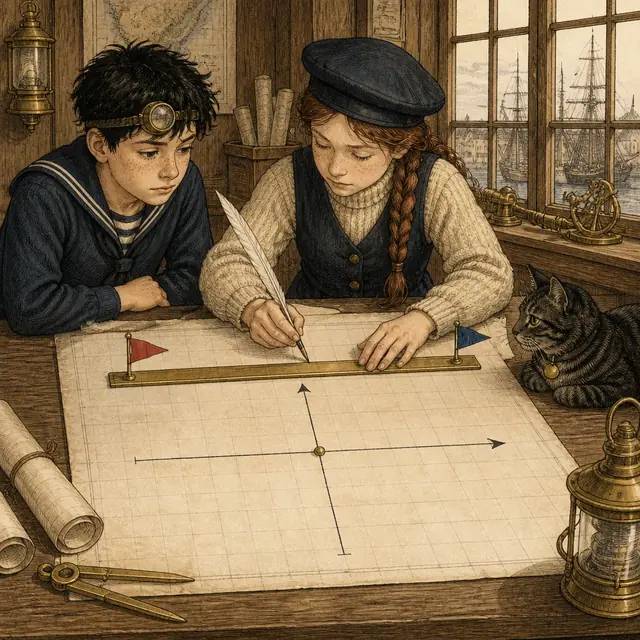
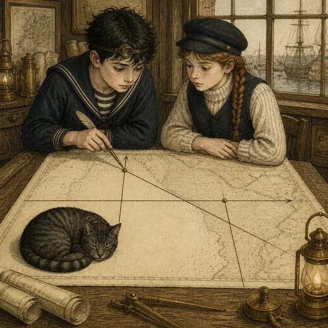
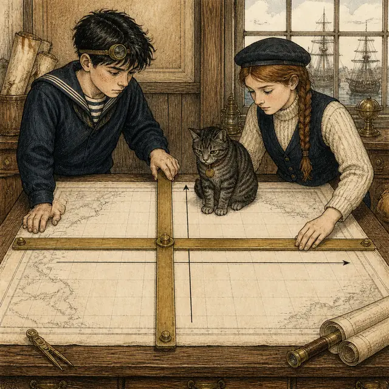
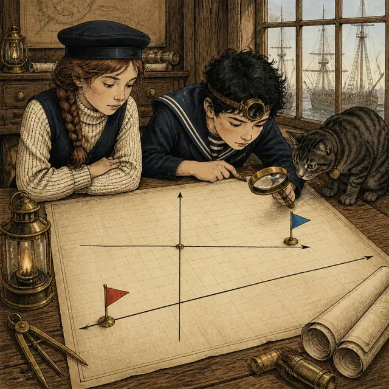
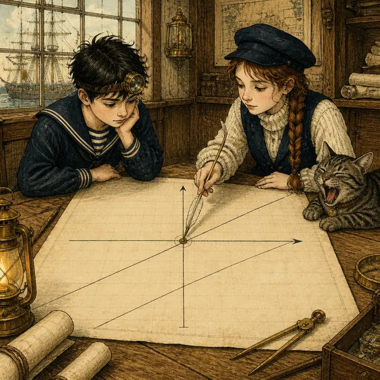
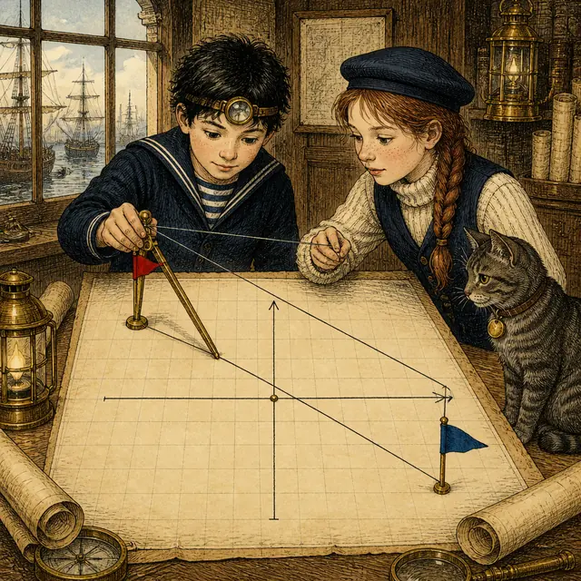
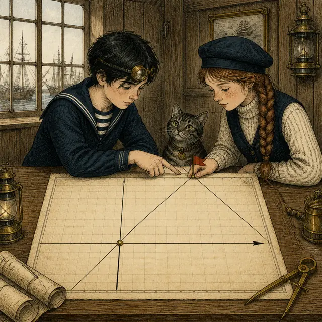
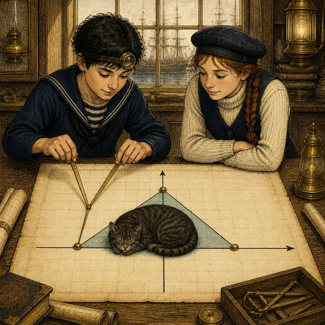

課前暖身漫畫：插滿旗子之後
領航員小汐給了見習製圖員阿岸一條航行規則：\(x - y = 0\)——也就是「往東走幾格，就往北走幾格」。阿岸照著找解：\((1,1)\)、\((2,2)\)、\((3,3)\)⋯⋯每找到一組就在海圖上插一支小旗。插到第三支的時候他抬起頭：這些旗子怎麼排得這麼整齊？小汐把黃銅平行尺往桌上一放，尺的邊緣同時貼住了三支旗——它們在同一條直線上。而且既然是直線，只要兩支旗就畫得出來，剩下的無限多組解，全都躺在這條線上等著。這一節要做的，就是把「解」與「線」這兩個字換著用。
重點 1：一組解，就是平面上的一個點
重點整理與敘述
- 先回憶第 1 章：一個二元一次方程式（例如 \(x - 2y = 1\)）有無限多組解。給定任何一個 \(x\)，都能算出配套的 \(y\)。
- 三段翻譯：同一件事有三種長相，要能自由換來換去。
- ⑴ 解：\(x = 1\)、\(y = 0\)
- ⑵ 數對：\((1, 0)\)
- ⑶ 坐標平面上的點：從原點向右 \(1\)、上下不動的那個位置
- 順序不可以顛倒：數對前面放 \(x\)、後面放 \(y\)。把 \(x=4\)、\(y=7\) 寫成 \((7,4)\) 就會標到完全不同的位置去（上一節的兩支旗子）。
- 解不一定是整數：\(x - 2y = 1\) 也有 \(x = 2\)、\(y = \dfrac{1}{2}\) 這種解，它一樣是平面上一個實實在在的點，只是落在格線之間。
- 怎麼一組一組找出來：把方程式整理成「\(y\) 等於含 \(x\) 的式子」，然後挑一個 \(x\) 代進去，就得到配套的 \(y\)。挑能整除的 \(x\) 算起來最輕鬆。
| 方程式 \(x - 2y = 1\) | 解 | 數對 |
|---|---|---|
| 代 \(x = 1\) | \(x=1\)、\(y=0\) | \((1,0)\) |
| 代 \(x = 3\) | \(x=3\)、\(y=1\) | \((3,1)\) |
| 代 \(x = -1\) | \(x=-1\)、\(y=-1\) | \((-1,-1)\) |
| 代 \(x = 2\) | \(x=2\)、\(y=\frac{1}{2}\) | \(\left(2,\frac{1}{2}\right)\) |

視覺互動探索：解 → 數對 → 點
挑一個 \(x\) 值，看看它配套的 \(y\) 是多少，以及這組解會插在哪裡：
形成性評量 (一組解一個點)
Q1. 下列哪一個點，是二元一次方程式 \(4x - 5y = 13\) 的一組解所對應的點？
解析：答案為 C。把每個數對的前一個數當 \(x\)、後一個數當 \(y\) 代進 \(4x-5y\)，算出來等於 \(13\) 的才是解。 \[\begin{aligned} & \text{C：} 4 \times 2 - 5 \times (-1) = 13 \\ &\quad \text{A：} 4 \times (-2) - 5 \times 1 = -13 \\ &\quad \text{B：} 4 \times 1 - 5 \times 2 = -6 \\ &\quad \text{D：} 4 \times (-1) - 5 \times 2 = -14 \end{aligned}\] 只有 C 算出 \(13\)。A 恰好算出 \(-13\)，它是「把 C 的兩個坐標都變號」的結果，代進去會整條式子跟著變號，不是同一個方程式的解。
Q2. 已知 \(x = 5\)、\(y = 2\) 是二元一次方程式 \(3x - 7y = 1\) 的一組解。關於這組解在坐標平面上對應的點，下列敘述何者正確？
解析：答案為 B。先驗算這確實是一組解：\(3 \times 5 - 7 \times 2 = 15 - 14 = 1\)。
數對的寫法是前 \(x\) 後 \(y\)，所以寫成 \((5,2)\)；兩個坐標都是正的，符號是 \((+,+)\)，落在第一象限。
A 把順序寫反了，\((2,5)\) 是另一個位置（而且它不是這個方程式的解：\(3\times2-7\times5=-29\)）。
C 的坐標寫對了但象限判錯：第四象限的符號是 \((+,-)\)，\(y\) 要是負的。
D 錯在「沒有對應的點」——把解寫成數對、再當成坐標，正是這一節的出發點。
重點 2：把解都描上去，會排成一條直線
重點整理與敘述
- 圖形的定義：把一個二元一次方程式所有的解都描在坐標平面上，所形成的圖形，就叫做這個二元一次方程式的圖形。
- 核心結論：在坐標平面上，二元一次方程式的圖形是一條直線。
- 為什麼看起來像「幾個點」：因為我們每次只描得出有限個點。實際上解有無限多組，把它們全部描完，中間的空隙會被填滿，成為一條沒有缺口的直線。
- 分數解也在線上：\(\left(-\frac{1}{2},\ -\frac{1}{2}\right)\)、\(\left(\frac{5}{2},\ \frac{5}{2}\right)\) 這種落在格線之間的解，同樣乖乖躺在那條直線上——課本用透明片疊合就是要看這件事。
- 反過來也成立：這條直線上的任何一點，它的坐標都是這個方程式的解。所以「線上的點」和「方程式的解」講的是同一批東西（重點 6 會再用到）。
- 不要說成「散開的一群點」：一群不相干的點連不成線；這些點會共線，正是因為它們都滿足同一個方程式。

視覺互動探索：一支一支插旗
把旗子愈插愈多（包含落在格線之間的解），看看它們排成什麼形狀：
形成性評量 (圖形是直線)
Q3. 關於二元一次方程式 \(2x + y = 9\) 的圖形，下列敘述何者正確？
解析：答案為 D。這正是本節的核心結論：二元一次方程式的圖形是一條直線。
A 錯在「解只有有限組」：二元一次方程式的解有無限多組，隨便給一個 \(x\) 都配得出 \(y\)。
B 錯在把分數解排除掉。例如 \(\left(\frac{1}{2},\ 8\right)\)：\(2 \times \frac{1}{2} + 8 = 9\)，它也是解，也在圖形上，只是落在格線之間。
C 要實際檢查：把 \((0,0)\) 代進去得 \(2 \times 0 + 0 = 0 \ne 9\)，所以不通過原點（重點 7 會專門處理這件事）。
Q4. 小汐把 \(x - 3y = 6\) 的四組解描成四個點：\((0,-2)\)、\((3,-1)\)、\((6,0)\)、\((9,1)\)，發現四點共線。她想再插一支旗，下列哪一個點也一定落在同一條直線上？
解析：答案為 A。那條直線就是 \(x-3y=6\) 的圖形，所以「在線上」等於「代進去會成立」。逐一檢查：
\[\begin{aligned}
& \text{A：} (-3) - 3 \times (-3) = 6 \\
&\quad \text{B：} 1 - 3 \times (-1) = 4 \\
&\quad \text{C：} (-3) - 3 \times 3 = -12 \\
&\quad \text{D：} 2 - 3 \times (-2) = 8
\end{aligned}\]
只有 A 等於 \(6\)。
C 和 A 的 \(y\) 只差一個負號，代進去卻差了 \(18\)——\(-3y\) 這一項對 \(y\) 的正負很敏感，抄的時候要特別小心。
B、D 算出來的 \(4\)、\(8\) 都在 \(6\) 附近，光看點的位置「好像差不多」，但只要不等於 \(6\) 就不在線上。
重點 3：兩組解就夠了——兩點作圖法
重點整理與敘述
- 憑什麼只要兩點：通過相異兩點的直線只有一條。既然二元一次方程式的圖形是一條直線，那麼只要抓住線上的兩個點，整條線就被釘死了。
- 三個步驟：
- 步驟 1：找出任意兩組解。
- 步驟 2：把這兩組解對應的點描在坐標平面上。
- 步驟 3：畫一條通過這兩點的直線。
- 盡量挑整數解：整數解落在格點上，描起來準；分數解落在格線之間，手一抖線就歪了。挑 \(x\) 的時候，找能被 \(y\) 的係數整除的那些值。
- 兩點不可以重合：兩組解如果算出同一個點，那只是一個點，通過它的直線有無限多條，畫不出唯一的圖形。
- 兩點離遠一點比較準：兩個點靠得太近時，畫線的角度誤差會被放大，延伸出去就偏掉了。
- 畫完可以驗算：再找第三組解，看它是不是也落在剛畫的線上；落不上去就是前面算錯了。

視覺互動探索：挑兩組解來畫線
替 \(3x + 2y = 6\) 挑兩個 \(x\) 值，看看畫出來的線好不好畫：
形成性評量 (兩點作圖法)
Q5. 要在坐標平面上畫出 \(5x + 2y = 10\) 的圖形，下列做法何者正確且最有效率？
解析：答案為 B。因為圖形是直線，而通過相異兩點的直線只有一條，所以兩組解就把整條線釘死了。
A 只描一個點是不夠的：通過同一個點的直線有無限多條，沒辦法決定該往哪個方向畫。
C 不是錯，而是白費力氣——多找的那八組解只會落在同一條線上，得到的圖形完全一樣。
D 的點抓對了但形狀畫錯：二元一次方程式的圖形一定是直線，不會是彎的。
Q6. 要畫 \(4x - 3y = 12\) 的圖形，下列哪一組的兩個點都是它的解，可以拿來描點連線？
解析：答案為 C。四個候選點各代一次 \(4x-3y\)，依 \((3,0)\)、\((0,-4)\)、\((0,4)\)、\((-3,0)\) 的順序：
\[\begin{aligned}
& 4 \times 3 - 3 \times 0 = 12 \;\checkmark \\
&\quad 4 \times 0 - 3 \times (-4) = 12 \;\checkmark \\
&\quad 4 \times 0 - 3 \times 4 = -12 \;\times \\
&\quad 4 \times (-3) - 3 \times 0 = -12 \;\times
\end{aligned}\]
兩個都對的只有 C。
A、B、D 各混進了一個算出 \(-12\) 的點——那是把正負號弄反的結果，\((0,4)\) 與 \((-3,0)\) 其實是另一條線 \(4x-3y=-12\) 的解。
順帶一提，C 的這兩個點正好就是這條線與兩軸的交點，是最好描的一組（重點 4 會專門講）。
重點 4：與兩軸的交點，以及不通過哪個象限
重點整理與敘述
- 兩個代零的口訣（來自上一節「軸上的點」）：
- \(x\) 軸上任何一點的 \(y\) 坐標都是 \(0\) \(\Rightarrow\) 令 \(y=0\)，解出的 \(x\) 就是與 \(x\) 軸的交點。
- \(y\) 軸上任何一點的 \(x\) 坐標都是 \(0\) \(\Rightarrow\) 令 \(x=0\)，解出的 \(y\) 就是與 \(y\) 軸的交點。
- 交點寫成數對時別漏掉那個 \(0\)：與 \(x\) 軸的交點是 \((\square, 0)\)，與 \(y\) 軸的交點是 \((0, \square)\)。位置放錯就變成完全不同的點。
- 這兩個交點最好用：它們一定落在軸上，描起來又快又準，是兩點作圖法的首選（只要這條線真的和兩軸都相交）。
- 怎麼看「不通過第幾象限」：把兩個交點描上去、連成線再往兩端延伸，然後看四個象限哪一區完全空著。
- 一條斜的直線恰好會經過三個象限，所以「不通過的象限」正好有一個。通過原點的斜直線是例外——它只經過相對的兩個象限。
- 不要背規則，畫出來最快：兩個交點一描，線一連，答案用看的就有了。

視覺互動探索：截點與空白的那一區
調整 \(a\)、\(b\)、\(c\)，看 \(ax + by = c\) 的線切在兩軸的哪裡、又漏掉哪一個象限：
形成性評量 (與兩軸的交點)
Q7. 二元一次方程式 \(2x + 5y = 20\) 的圖形，與 \(x\) 軸、\(y\) 軸的交點坐標分別為何？
解析：答案為 A。兩次代零：
\[\begin{aligned}
& \text{令 } y=0：2x = 20 \Rightarrow x = 10 \\
&\quad \Rightarrow \text{與 } x \text{ 軸交於 } (10, 0) \\
&\quad \text{令 } x=0：5y = 20 \Rightarrow y = 4 \\
&\quad \Rightarrow \text{與 } y \text{ 軸交於 } (0, 4)
\end{aligned}\]
B 的數字算對了，但兩個數對裡外顛倒：與 \(x\) 軸的交點必須把 \(0\) 放在後面。
C 把兩個交點對調了——\(4\) 是令 \(x=0\) 得到的 \(y\)，屬於 \(y\) 軸那一邊。
D 是把 \(x\)、\(y\) 的係數當成 \(1\) 直接讀常數項，忘了要除以係數。
Q8. 二元一次方程式 \(4x - 5y = 20\) 的圖形不通過第幾象限？
解析：答案為 D。先求兩個交點再畫線：
\[\begin{aligned}
& \text{令 } y=0：4x = 20 \Rightarrow (5, 0) \\
&\quad \text{令 } x=0：-5y = 20 \\
&\qquad \Rightarrow (0, -4)
\end{aligned}\]
把 \((5,0)\) 與 \((0,-4)\) 連起來並向兩端延伸：這條線從左下往右上爬。
往右上延伸過 \((5,0)\) 之後進入第一象限；\((5,0)\) 與 \((0,-4)\) 之間那一段 \(x>0\)、\(y<0\)，在第四象限；往左下延伸過 \((0,-4)\) 之後 \(x<0\)、\(y<-4\)，在第三象限。左上那一區（\(x<0\)、\(y>0\)）完全沒有碰到，所以不通過第二象限。
A、B、C 都是這條線確實會經過的三個象限。一條斜的直線恰好經過三個象限，題目要的是剩下的那一個。
重點 5：\(y=m\) 是水平線，\(x=n\) 是鉛垂線
重點整理與敘述
- 它們也是二元一次方程式：把 \(y = 5\) 補成 \(0x + y = 5\)，把 \(x = 3\) 補成 \(x + 0y = 3\)，就看得出來它們同屬這一家，圖形當然也是直線。
- \(y=m\) 的圖形：是一條與 \(y\) 軸垂直（也就是水平）的直線，並且與 \(y\) 軸交於 \((0, m)\)。線上每一點的 \(y\) 坐標都是 \(m\)，\(x\) 想是多少都行。
- \(x=n\) 的圖形：是一條與 \(x\) 軸垂直（也就是鉛垂）的直線，並且與 \(x\) 軸交於 \((n, 0)\)。線上每一點的 \(x\) 坐標都是 \(n\)。
- 兩個特例：\(y = 0\) 的圖形就是 \(x\) 軸；\(x = 0\) 的圖形就是 \(y\) 軸。
- 最容易搞混的地方：「\(y=m\)」裡出現的是 \(y\)，畫出來的線卻不是沿著 \(y\) 軸的方向。記法是「等號右邊那個數釘住哪一個坐標，線就往另一個方向鋪開」。
- 它不是一個點：\(x=5\) 不是「\(x\) 軸上的 \(5\) 那一點」，而是通過 \((5,0)\) 的一整條鉛垂線。
| \(y = m\) | \(x = n\) | |
|---|---|---|
| 補成二元一次 | \(0x + y = m\) | \(x + 0y = n\) |
| 線的方向 | 水平 | 鉛垂 |
| 垂直於哪一軸 | \(y\) 軸 | \(x\) 軸 |
| 與軸的交點 | \((0, m)\) | \((n, 0)\) |
| 特例 | \(y=0\) 就是 \(x\) 軸 | \(x=0\) 就是 \(y\) 軸 |

視覺互動探索：水平線與鉛垂線切換台
選一種形式、拖動那個數字，看線往哪個方向鋪、又釘在哪裡：
形成性評量 (水平線與鉛垂線)
Q9. 在坐標平面上，通過點 \((-8, 5)\) 且垂直 \(x\) 軸的直線，其方程式為何？
解析：答案為 C。「垂直 \(x\) 軸」就是鉛垂的直線，形式一定是 \(x = n\)。
這條線上每一點的 \(x\) 坐標都相同；已知它通過 \((-8,5)\)，所以那個共同的 \(x\) 坐標是 \(-8\)，方程式為 \(x = -8\)。
A 是水平線（垂直 \(y\) 軸），方向差了 \(90^\circ\)；它確實通過 \((-8,5)\)，但不符合「垂直 \(x\) 軸」。
B、D 都是把 \(-8\) 與 \(5\) 這兩個數字放錯邊：\(x=n\) 裡的 \(n\) 要拿已知點的 \(x\) 坐標，不能拿 \(y\) 坐標。
Q10. 關於方程式 \(y = -\dfrac{7}{2}\) 在坐標平面上的圖形，下列敘述何者正確？
解析：答案為 A。\(y = -\frac{7}{2}\) 屬於 \(y = m\) 這一型（其中 \(m = -\frac{7}{2}\)），圖形是一條與 \(y\) 軸垂直的水平線，並且交 \(y\) 軸於 \(\left(0, -\frac{7}{2}\right)\)，位置在 \(x\) 軸下方 \(3.5\) 格。
B 把它讀成 \(x = n\) 那一型了：式子裡出現的是 \(y\)，被釘住的就是 \(y\) 坐標。
C 錯在「只是一個點」：線上有無限多個點，\(\left(1,-\frac{7}{2}\right)\)、\(\left(-4,-\frac{7}{2}\right)\) 都在上面——\(x\) 是自由的。
D 錯在以為分數畫不出來：\(-\frac{7}{2}\) 只是落在 \(-3\) 與 \(-4\) 之間，照樣描得出位置。
重點 6：點在圖形上，就是坐標代得進去
重點整理與敘述
- 雙向的等價關係：
- ⑴ 一組解 \(\Rightarrow\) 它對應的點一定在圖形上。
- ⑵ 圖形上的任何一點 \(\Rightarrow\) 它的坐標一定是一組解。
- 所以「驗點」只有一招：把點的 \(x\)、\(y\) 坐標代進方程式，兩邊相等就在線上，不相等就不在。不必畫圖、不必量距離。
- 反過來可以求未知的係數：題目說「圖形通過 \(P\)」，等於送你一組解。把 \(P\) 的坐標代進去，方程式裡剩下的那個字母就變成一元一次方程式，解出來即可。
- 代的時候盯緊位置：\(x\) 坐標只能代給 \(x\)，\(y\) 坐標只能代給 \(y\)。把 \(P(3,-2)\) 代成 \(x=-2\)、\(y=3\) 是最常見的失分點。
- 負數要加括號：\(3 \times b \times (-1)\) 這種地方不加括號就容易掉負號。
- 算完回代驗算：把解出來的係數放回原式，再把 \(P\) 代一次，兩邊要真的相等。

視覺互動探索：驗點機與求係數台
左邊那顆按鈕先驗一個點在不在線上，右邊那顆反過來求出未知係數：
形成性評量 (點在圖形上)
Q11. 若方程式 \(5x + ay = -7\) 的圖形通過點 \(P(-2, 3)\)，則 \(a\) 的值為何？
解析：答案為 D。「圖形通過 \(P(-2,3)\)」等於「\(x=-2\)、\(y=3\) 是一組解」，代進去：
\[\begin{aligned}
& 5 \times (-2) + a \times 3 = -7 \\
&\quad -10 + 3a = -7 \\
&\quad 3a = 3 \Rightarrow a = 1
\end{aligned}\]
回代驗算：\(5 \times (-2) + 1 \times 3 = -7\)，成立。
A 是把右邊的 \(-7\) 抄成 \(+7\)：\(-10+3a=7\) 會得到 \(a=\frac{17}{3}\)。
B 是把 \(5 \times (-2)\) 算成 \(+10\)（漏掉負號）：\(10+3a=-7\) 會得到 \(a=-\frac{17}{3}\)。
C 是把 \(P\) 的兩個坐標對調，代成 \(x=3\)、\(y=-2\)：\(15-2a=-7\) 會得到 \(a=11\)。
Q12. 下列哪一個點不在方程式 \(3x - 4y = 10\) 的圖形上？
解析：答案為 B。四個點各代一次 \(3x - 4y\)，等於 \(10\) 的才在線上：
\[\begin{aligned}
& \text{A：} 3 \times 2 - 4 \times (-1) = 10 \\
&\quad \text{B：} 3 \times 6 - 4 \times 3 = 6 \\
&\quad \text{C：} 3 \times (-2) - 4 \times (-4) = 10 \\
&\quad \text{D：} 3 \times 10 - 4 \times 5 = 10
\end{aligned}\]
只有 B 算出 \(6\)，所以 B 不在圖形上。
A、C 都用到「減去一個負數等於加」；只要在這一步掉了負號，就會把它們誤判成不在線上。
提醒：不在線上不代表離線很遠。\((6,3)\) 其實離這條線不遠，光用眼睛看是分不出來的，一定要代進去算。
重點 7：通過原點，就是常數項為 \(0\)
重點整理與敘述
- 原點也只是一個點：它的坐標是 \((0,0)\)。所以「圖形通過原點」就是「\(x=0\)、\(y=0\) 是一組解」，仍然是重點 6 的那一招。
- 核心結論：把 \((0,0)\) 代進 \(ax + by = c\)，左邊必定變成 \(0\)，所以 \[\begin{aligned} & ax + by = c \text{ 的圖形通過原點} \\ &\quad \Longleftrightarrow c = 0 \end{aligned}\]
- 用之前要先整理成標準式：\(y = 3x + 1\) 要先搬成 \(-3x + y = 1\)，看出 \(c = 1 \ne 0\)，才知道它不通過原點。沒整理就直接看數字很容易誤判。
- 常數項藏在別處也算：\(4x - 3y + k - 8 = 0\) 的常數項是 \(k-8\)，通過原點的條件是 \(k - 8 = 0\)，不是 \(k = 0\)。
- 通過原點的線比較特別：它只會經過相對的兩個象限（一、三或二、四），不像一般的斜直線經過三個。
- 不確定就代代看：這條規則的本質只是「代 \((0,0)\)」，忘記結論時直接代一次最保險。

視覺互動探索：原點檢查器
拖動常數項 \(c\)，看直線平移，並注意它什麼時候才壓到原點：
形成性評量 (通過原點)
Q13. 下列哪一個二元一次方程式的圖形會通過原點？
解析：答案為 A。把 \((0,0)\) 代進每一個方程式，兩邊相等的才通過原點：
\[\begin{aligned}
& \text{A：} 7 \times 0 = 4 \times 0 \Rightarrow 0 = 0 \quad \checkmark \\
&\quad \text{B：} 0 - 0 = 0 \ne 1 \quad \times \\
&\quad \text{C：} 0 \ne 7 \times 0 + 4 = 4 \quad \times \\
&\quad \text{D：} 0 + 0 = 0 \ne 4 \quad \times
\end{aligned}\]
A 整理成標準式是 \(7x - 4y = 0\)，常數項 \(c = 0\)，符合結論。
C 要特別小心：它還沒整理成標準式，搬過去是 \(-7x + y = 4\)，常數項是 \(4\) 不是 \(0\)。若只看「等號右邊有沒有單獨的數字」就會誤判 A 與 C。
Q14. 若方程式 \(6x - 5y + k - 8 = 0\) 的圖形通過坐標平面上的原點，則 \(k\) 的值為何？
解析：答案為 C。直接把原點的坐標 \(x=0\)、\(y=0\) 代進去：
\[\begin{aligned}
& 6 \times 0 - 5 \times 0 + k - 8 = 0 \\
&\quad k - 8 = 0 \Rightarrow k = 8
\end{aligned}\]
A 是移項時沒有變號：把 \(k-8=0\) 寫成 \(k=0-8\)。
B 是把結論背成「通過原點就是 \(k=0\)」——真正要等於 \(0\) 的是整個常數項 \(k-8\)，不是那個字母本身。
D 是把「原點」誤當成 \((1,1)\) 代進去：\(6-5+k-8=0\) 會得到 \(k=7\)。原點的坐標是 \((0,0)\)。
重點 8：反過來，由兩個點求出方程式
重點整理與敘述
- 方向反過來了：前面都是「給方程式，畫出線」；這裡是「給線上的兩個點，反求那個方程式」。
- 做法只有三步：
- 步驟 1：把方程式寫成待定的形式，例如 \(y = ax + b\)（或 \(ax + by = 2\) 這種題目指定的樣子）。
- 步驟 2：把兩個點各代一次，得到兩條方程式——這正是一個二元一次聯立方程式，未知數是 \(a\) 與 \(b\)。
- 步驟 3：用第 1 章的加減消去法或代入消去法解出 \(a\)、\(b\)，寫回原式。
- 兩個特例要先看出來，不必列聯立：
- 兩點的 \(x\) 坐標相同（如 \((-2,1)\) 與 \((-2,4)\)）\(\Rightarrow\) 是鉛垂線 \(x = -2\)。
- 兩點的 \(y\) 坐標相同（如 \((1,-3)\) 與 \((5,-3)\)）\(\Rightarrow\) 是水平線 \(y = -3\)。
- 鉛垂線寫不成 \(y = ax + b\)：那一型的每個 \(x\) 只配一個 \(y\)，而鉛垂線上同一個 \(x\) 配了無限多個 \(y\)。遇到這種題目要直接寫成 \(x = n\)。
- 兩點不可以是同一點：那樣兩條式子會變成同一條，解不出唯一的 \(a\)、\(b\)。
- 算完把兩個點都回代一次：兩個都要成立，只驗一個容易漏掉抄錯的那條。

視覺互動探索：兩點反求台
把兩支旗插到任意位置，看看反推出來的方程式長什麼樣子：
形成性評量 (由兩點反求)
Q15. 若方程式 \(y = ax + b\) 的圖形通過 \((1, 3)\) 與 \((-1, 7)\) 兩點，則此方程式為何？
解析：答案為 B。兩點各代一次，得到以 \(a\)、\(b\) 為未知數的聯立方程式：
\[\begin{aligned}
& 3 = a + b \quad \cdots ① \\
&\quad 7 = -a + b \quad \cdots ② \\
&\quad ① + ②：10 = 2b \Rightarrow b = 5 \\
&\quad \text{代回 ①：} a = 3 - 5 = -2
\end{aligned}\]
所以方程式是 \(y = -2x + 5\)。回代驗算：\(-2 \times 1 + 5 = 3\)、\(-2 \times (-1) + 5 = 7\)，兩點都成立。
A 是把 \(a\) 的負號漏掉、再用 ① 反推 \(b = 3-2 = 1\)。
C 的 \(a\) 對了，但把 \(b\) 的符號抄錯成 \(-5\)；代 \((1,3)\) 會得到 \(-7\)。
D 把 \(a\) 與 \(b\) 對調了：\(a\) 是 \(x\) 的係數，\(b\) 是常數項，不能互換。
Q16. 在坐標平面上，通過 \((6, 0)\) 與 \((6, 3)\) 兩點的直線，其方程式為何？
解析：答案為 D。兩個點的 \(x\) 坐標都是 \(6\)，代表這條線上的每一點都在「\(x\) 等於 \(6\)」的位置上，所以它是一條鉛垂線 \(x = 6\)。
這種題目不必列聯立——事實上它也寫不成 \(y = ax + b\)：那一型的每個 \(x\) 只能配一個 \(y\)，而這條線在 \(x=6\) 上配了無限多個 \(y\)。
A 是把「相同的坐標」認錯邊了：相同的是 \(x\) 坐標，不是 \(y\)。\(y=6\) 是一條水平線，它兩個點都不通過。
B 通過 \((6,0)\) 嗎？\(2 \times 6 = 12 \ne 0\)，不通過。
C 通過 \((6,0)\)，但代 \((6,3)\) 得 \(9 \ne 6\)，只碰到其中一個點。
重點 9：兩條線的交點，就是聯立方程式的解
重點整理與敘述
- 交點特別在哪裡：交點同時在兩條線上。既然「在線上」等於「是那個方程式的解」，交點的坐標就同時是兩個方程式的解——那正是共同解的定義。
- 雙向的結論：
- ⑴ 兩個二元一次方程式的圖形若相交於一點，交點坐標就是這個聯立方程式的解。
- ⑵ 聯立方程式若有一組解，這組解就是兩個圖形的交點坐標。
- 代數與幾何接上線了：第 1 章用加減消去法「算」出來的那一組 \(x\)、\(y\)，在這裡變成海圖上看得見的一個位置。
- 兩種求法可以互相驗算：畫圖看交點快但受限於格線精度；解聯立慢一點但精確。交點是分數時一定要用解的，用看的讀不出 \(\frac{8}{3}\)。
- 畫圖時各自找兩組解：\(L_1\) 找兩點連線、\(L_2\) 找兩點連線，兩條線一畫，交點就浮出來了。
- 本冊只處理相交於一點的情況：課綱規定國中階段的聯立方程式只討論恰有一組解，所以兩條線一定會交，而且只交一次。

視覺互動探索：交點＝共同解
分別拖動兩條線的常數項，看交點跑到哪裡，並對照解出來的答案：
形成性評量 (交點＝聯立解)
Q17. 坐標平面上，直線 \(L_1\) 是 \(3x + y = 11\) 的圖形，直線 \(L_2\) 是 \(x - 2y = -8\) 的圖形，兩直線相交於點 \(P\)。則 \(P\) 的坐標為何？
解析：答案為 C。交點坐標就是聯立方程式的解，所以直接解：
\[\begin{aligned}
& 3x + y = 11 \Rightarrow y = 11 - 3x \\
&\quad \text{代入 } x - 2y = -8： \\
&\quad x - 2(11 - 3x) = -8 \\
&\quad x - 22 + 6x = -8 \\
&\quad 7x = 14 \Rightarrow x = 2 \\
&\quad y = 11 - 3 \times 2 = 5
\end{aligned}\]
所以 \(P(2, 5)\)。回代驗算：\(3\times2+5=11\)、\(2-2\times5=-8\)，兩式都成立。
交點必須同時滿足兩個方程式，所以驗算時兩條都要代——另外三個選項各差在這裡：
A 把 \(x\)、\(y\) 對調寫成 \((5,2)\)：代 \(L_1\) 得 \(3\times5+2=17\)，兩條都不通過。
B 的 \((3,2)\) 只滿足 \(L_1\)（\(3\times3+2=11\)），代 \(L_2\) 卻得 \(3-2\times2=-1 \ne -8\)——它在 \(L_1\) 上，但不在 \(L_2\) 上。
D 的 \((0,4)\) 剛好相反，只滿足 \(L_2\)（\(0-2\times4=-8\)），代 \(L_1\) 得 \(4 \ne 11\)。
Q18. 已知二元一次聯立方程式 \(\begin{cases} 2x + y = 7 \\ x - y = 2 \end{cases}\) 的解是 \(x = 3\)、\(y = 1\)。關於這兩個方程式在坐標平面上的圖形，下列敘述何者正確？
解析：答案為 A。聯立方程式有一組解，就代表兩個圖形相交於一點，而那個交點的坐標就是這組解——把 \(x=3\)、\(y=1\) 寫成數對，交點是 \((3,1)\)。
B 把數對的順序寫反了：前面放 \(x\)、後面放 \(y\)，而題目給的是 \(x=3\)、\(y=1\)。
C 錯在「重疊」：兩條線若完全重疊，線上每一點都是共同解，聯立方程式會有無限多組解，不會只有一組。
D 錯在「平行」：平行就沒有共同的點，聯立方程式會無解。題目已經說有一組解了。
重點 10：兩條線與坐標軸圍成的面積
重點整理與敘述
- 要圍成三角形，需要三個頂點：兩條線的交點算一個，兩條線各自與那條軸的交點再算兩個。
- 四個步驟：
- 步驟 1：各自求出與 \(x\) 軸的交點（令 \(y=0\)），得到 \(B\)、\(C\)。
- 步驟 2：解聯立求出兩線的交點 \(A\)。
- 步驟 3：底就是 \(B\)、\(C\) 之間的距離；高就是 \(A\) 到 \(x\) 軸的距離。
- 步驟 4：面積 \(= \dfrac{1}{2} \times \text{底} \times \text{高}\)。
- 底怎麼算：兩點都在 \(x\) 軸上時，距離是兩個 \(x\) 坐標相減再取絕對值。相減時記得減去負數要變加。
- 高怎麼算：交點 \(A\) 到 \(x\) 軸的距離是 \(|y_A|\)（上一節的「點到兩軸的距離是交叉的」）。不是 \(A\) 的 \(x\) 坐標。
- 換成 \(y\) 軸也一樣：改成令 \(x=0\) 求兩個交點當底，高改用 \(|x_A|\)。
- 什麼時候圍不出三角形：兩條線若與 \(x\) 軸交在同一點（也就是交點剛好落在 \(x\) 軸上），三個頂點會擠成一直線，面積是 \(0\)。

視覺互動探索：圍出來的那塊海域
拖動兩條線的常數項，看三角形怎麼變形，以及底、高、面積各是多少：
形成性評量 (圍成的面積)
Q19. 坐標平面上，\(x - y = 2\) 與 \(x + 2y = 8\) 的圖形交於點 \(A\)，兩圖形與 \(x\) 軸的交點分別為 \(B\)、\(C\)。則三角形 \(ABC\) 的面積為何？
解析：答案為 D。照四個步驟走：
\[\begin{aligned}
& \text{令 } y=0，\text{兩線各得：} \\
&\quad x-y=2 \Rightarrow B(2, 0) \\
&\quad x+2y=8 \Rightarrow C(8, 0) \\
&\quad \text{兩式相減：} -3y = -6 \Rightarrow y = 2 \\
&\quad x = 2 + y = 4 \Rightarrow A(4, 2) \\
&\quad \text{底} = |8-2| = 6 \\
&\quad \text{高} = |2| = 2 \\
&\quad \text{面積} = \tfrac{1}{2} \times 6 \times 2 = 6
\end{aligned}\]
A 是忘了乘 \(\frac{1}{2}\)：\(6 \times 2 = 12\)。
B 是把「底」誤取成 \(C\) 的 \(x\) 坐標 \(8\)：\(\frac{1}{2} \times 8 \times 2 = 8\)。底是兩點之間的距離，要相減。
C 是把兩個 \(x\) 坐標相加當成底：\(\frac{1}{2} \times (2+8) \times 2 = 10\)。
Q20. 坐標平面上，\(3x + 4y = 24\) 的圖形與 \(x\) 軸、\(y\) 軸圍成一個三角形，則此三角形的面積為何？
解析：答案為 B。這次的三個頂點是原點與兩個軸上的交點：
\[\begin{aligned}
& \text{令 } y=0：3x = 24 \Rightarrow (8, 0) \\
&\quad \text{令 } x=0：4y = 24 \Rightarrow (0, 6) \\
&\quad \text{兩股} = 8 \text{ 與 } 6 \\
&\quad \text{面積} = \tfrac{1}{2} \times 8 \times 6 = 24
\end{aligned}\]
因為兩軸互相垂直，這個三角形是直角三角形，兩個交點到原點的距離就是兩股。
A 是忘了乘 \(\frac{1}{2}\)：\(8 \times 6 = 48\)。
C 是把兩股各取一半再相乘（\(4 \times 3\)），等於多除了一次 \(2\)。
D 是把兩股相加當成面積：\(8+6=14\)。面積要用乘的。
小節總結與核心回顧
二元一次方程式圖形速查表
- 解就是點：\(x=a\)、\(y=b\) \(\to\) 數對 \((a,b)\) \(\to\) 平面上的一個點。前 \(x\) 後 \(y\)，順序不可顛倒。
- 圖形是一條直線：把所有的解描上去，會是一條沒有缺口的直線；分數解也在線上。
- 兩點作圖：找兩組解 \(\to\) 描點 \(\to\) 連線。挑整數解、兩點離遠一點最好畫；兩點重合就畫不出來。
- 與兩軸的交點：令 \(y=0\) 得 \((\square,0)\)、令 \(x=0\) 得 \((0,\square)\)。這兩點也是最好用的作圖點。
- 不通過哪個象限：兩交點連線後往兩端延伸，看哪一區完全空著。斜直線恰好經過三個象限。
- \(y=m\) 與 \(x=n\)：\(y=m\) 是水平線、垂直 \(y\) 軸、交於 \((0,m)\)；\(x=n\) 是鉛垂線、垂直 \(x\) 軸、交於 \((n,0)\)。\(y=0\) 就是 \(x\) 軸，\(x=0\) 就是 \(y\) 軸。
- 點在圖形上 \(\Longleftrightarrow\) 坐標是解：驗點就是代進去比兩邊；反過來「通過某點」等於送你一組解，可以拿來求未知係數。
- 通過原點 \(\Longleftrightarrow\) 常數項為 \(0\)：先整理成 \(ax+by=c\) 再看 \(c\)；常數項藏成 \(k-8\) 時，要 \(k-8=0\)。
- 由兩點反求方程式：兩點各代一次 \(\to\) 得到聯立 \(\to\) 解出係數。\(x\) 坐標相同是 \(x=n\)、\(y\) 坐標相同是 \(y=m\)，這兩種不必列聯立。
- 交點＝聯立解：交點同時在兩條線上，坐標同時滿足兩式。交點是分數時一定要用解的，看圖讀不出來。
- 圍成的面積：底取軸上兩點的距離（相減取絕對值），高取交點到該軸的距離（另一個坐標的絕對值），再乘 \(\frac{1}{2}\)。
回到製圖室：把規則畫成一條航線
從無限多組解，到一條看得見的線
第 1 章的結論其實有點抽象：\(x - y = 0\) 有無限多組解。無限多是多少？那時候只能一組一組列給你看，寫成一張永遠寫不完的表。
這一節換了一個做法——把每一組解插一支旗。插到第三支的時候就看得出苗頭，插到第七支已經很清楚：這些旗子排成一條線。於是「無限多組解」不再是一句話，而是一條可以用尺畫出來的航線。原本要用表格慢慢列的東西，現在一眼看完。
一句話，兩種說法
整節其實只在做一件事：把代數的說法和幾何的說法換著用。「\((3,-1)\) 是解」＝「\((3,-1)\) 在線上」；「通過原點」＝「\((0,0)\) 是解」＝「\(c=0\)」；「兩條線交在一起」＝「有共同解」。哪一種說法算起來比較快，就用哪一種。
最漂亮的一次兌現在重點 9。上一章要用加減消去法辛苦算出來的那組共同解，在海圖上就是兩條航線交叉的那個叉——一個位置。代數與幾何，在這裡第一次接上線。
再往前走一步
第四冊會把這條線再看仔細一點：它斜得多陡、它從 \(y\) 軸的哪裡出發，都會有自己的名字（斜率與截距）。到那時候，\(y = ax + b\) 裡的 \(a\) 與 \(b\) 就不再只是兩個待解的字母，而是這條航線的方向與起點。
不過那是以後的事。眼前這張海圖上，你已經能把一個方程式畫成一條線、把一條線讀回一個方程式，也能一眼指出兩條航線會在哪裡相遇。第 2 章到這裡就走完了。